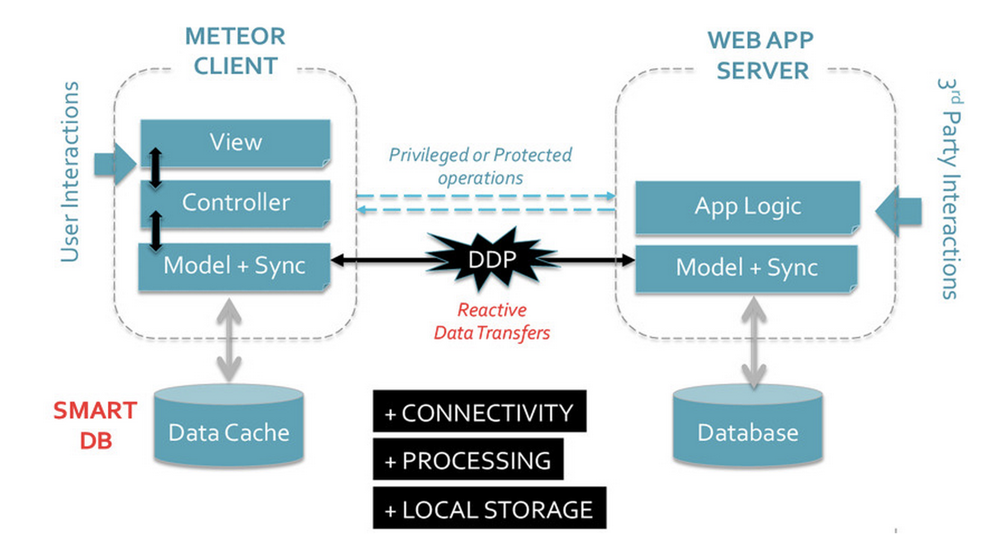
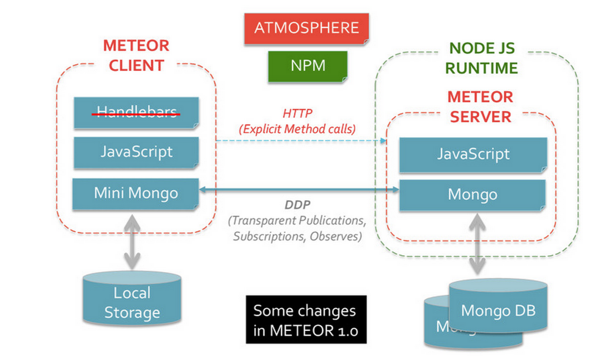

Make With Meteor
Building Real-Time, Mobile-Ready Apps
MHVLUG Meetup | March 4, 2015

What is Meteor?
"A complete open source platform for building web and mobile apps in pure JavaScript.""
Meteor WebsiteReal-Time, Reactive Apps
Detect data changes, propagate changes to all clients, update UI -- all in real time and with minimal code complexity for developers
What is the platform?
NodeJS Back-End, Front-End Framework (Blaze, Tracker), Real-time Data Protocol (DDP), Build System (CLI, Isobuild), Package Management (Atmosphere, NPM, Cordova)
What can we build with it?

|

|
Why Use Meteor?
Modern User Interface
Responsive Design * Single Page Applications
Mobile + Web Friendly
Browser Ready * Cordova Integration for Native App Markets
Isomorphic in JavaScript
One language * One codebase * One database API
Wait .. there's more
Unified Package System
Atmosphere Repository * Meteor, Cordova and NPM Packages.
Unified Build System
One buid tool to Create, Package, Test, Run and Deploy.
Database Everywhere
Data on the Wire * Latency Compensation * Data Distribution Protocol
0. Getting Started
1. Create Boilerplate App
2. Deploy Your App
3. Under The Hood
4. Templates and Data Binding
5. Collections and CRUD
6. Forms, Inputs and Events
7. Running on Mobile
8. Session and State
9. Users and Accounts
10. Security Sidebar
11. Publish and Subscribe
12. Routes and Navigation
Meteor Subprojects
Collection of open-source projects developed for independent usebut adding collective value to the Meteor platform.
- libraries (Blaze, Tracker, ..)
- tools (Isobuild, meteor CLI, ..)
- standards (DDP = 'REST' for websockets)
- services (package server, build farm )
Pretty Code
function linkify( selector ) {
if( supports3DTransforms ) {
var nodes = document.querySelectorAll( selector );
for( var i = 0, len = nodes.length; i < len; i++ ) {
var node = nodes[i];
if( !node.className ) {
node.className += ' roll';
}
}
}
}
Code syntax highlighting courtesy of highlight.js.
THANK YOU
Nitya Narasimhan
Meteor Hudson Valley
We host monthly 'workshop' events catering to beginner and intermediate level attendees.
Come join us for our next workshop event wher we'll be exploring Maps, Civic Data, Reactive Joins and Meteor packages.